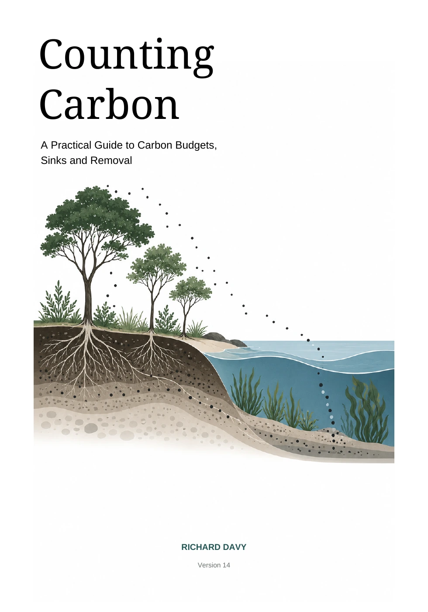

The book and its interactive companions
Counting Carbon
A Practical Guide to Carbon Budgets, Sinks and Removal
What does a carbon claim actually mean? Follow the tonnes, test the scale, and explore what forests, oceans and technology can contribute.
This book makes the assumptions visible, so you can judge the promise for yourself.
Choose your formatPeek insidePeek inside
Three pages from the new digital edition. Select a page to read it.
Choose your format
Get PDF and EPUB together in one purchase. The printed edition will follow.